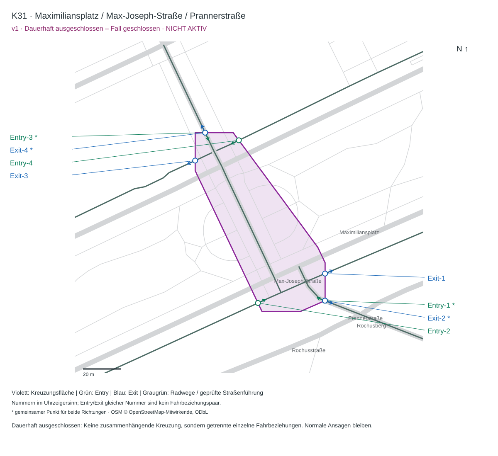
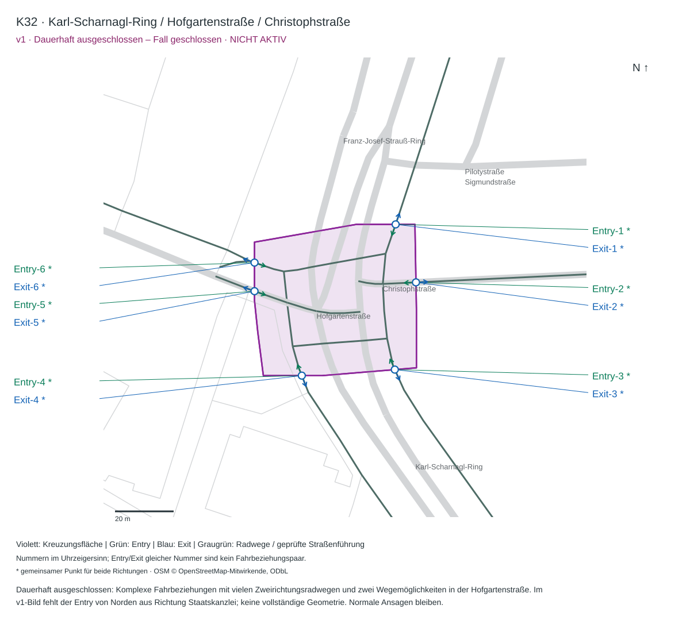

BA01 · Weitere Kreuzungen · K30–K33
K30 v3 ist freigegeben und mit drei Fahrbeziehungen im Branch aktiviert; K31 und K32 sind dauerhaft ausgeschlossen. K33 v2 ist mit acht geprüften Fahrbeziehungen aktiviert. Bei künftigen Entwürfen Kreuzungsumfang, Radwegseite, Pfeile und fehlende Anschlüsse prüfen. Warteflächen und zusammengehörende Querungen gehören hinein; benachbarte Einmündungen bleiben draußen. Gemeinsame Entry-/Exit-Punkte sind zulässig. Fahrbahnpunkte zeigen die OSM-Mittellinie. Aktivierungs-/Live-Stand siehe Gesamtübersicht; keine pauschale technische Fahrbeziehungsfreigabe. K30 hat nach Entfernung der Ottostraße drei Straßenarme; drei eindeutige Fahrbeziehungen bestehen die vorhandene Winkelprüfung ohne Vierarm-Topologie.
Gesamtübersicht · Kontaktübersicht
K30 v3 · Lenbachplatz / Pacellistraße
Geometrie v3 bestätigt; drei Fahrbeziehungen technisch bestanden und im Branch aktiviert. Entry-4 nach Exit-3 ohne Kreuzungsansage (geradeaus ohne Ampel). Ottostraße und Exit-5 bleiben ausgeschlossen. Interner Radweganschluss zur Pacellistraße durch aktuellen OSM-Beleg geprüft; Fläche und Punkte unverändert.

K31 v1 · Maximiliansplatz / Max-Joseph-Straße / Prannerstraße
Dauerhaft ausgeschlossen: Keine zusammenhängende Kreuzung, sondern getrennte einzelne Fahrbeziehungen. Normale Ansagen bleiben.

K32 v1 · Karl-Scharnagl-Ring / Hofgartenstraße / Christophstraße
Dauerhaft ausgeschlossen: Komplexe Fahrbeziehungen mit vielen Zweirichtungsradwegen und zwei Wegemöglichkeiten in der Hofgartenstraße. Im v1-Bild fehlt der Entry von Norden aus Richtung Staatskanzlei; keine vollständige Geometrie. Normale Ansagen bleiben.

K33 v2 · Sendlinger-Tor-Platz / Sonnenstraße / Lindwurmstraße / Blumenstraße
Geometrie v2 von Thomas bestätigt. Acht Links-/Geradeausbeziehungen technisch bestanden und aktiviert; Rechtsabbiegungen behalten Standardhinweise. Entry-3 und Exit-3 unverändert, übrige Punkte näher an der Kreuzung. Nußbaumstraße, Pettenkoferstraße und östlicher Platzbereich bleiben außerhalb.

© OpenStreetMap-Mitwirkende, ODbL. Keine Vollständigkeitsbehauptung für BA01.